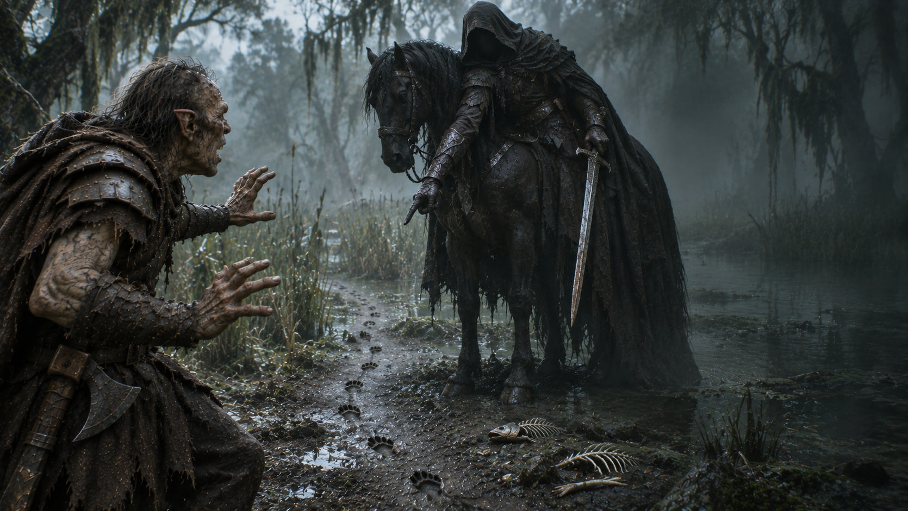

Fin de l’aventure · Échec
La Colère du Mordor
Gollum court toujours. Votre mission s’arrête ici.
Découvrir votre sortMentir à un Nazgûl
Vous affirmez avoir vu Gollum disparaître sous l’eau. Le Nazgûl reste immobile. Puis il désigne les empreintes fraîches qui quittent le marais, juste à vos pieds.
« Tu oses mentir au serviteur de Sauron ? »
Il dégaine sa lame de Morgul et vous tranche la tête d'un seul geste.
Vous vouliez rentrer plus tôt. Techniquement, c’est réussi.